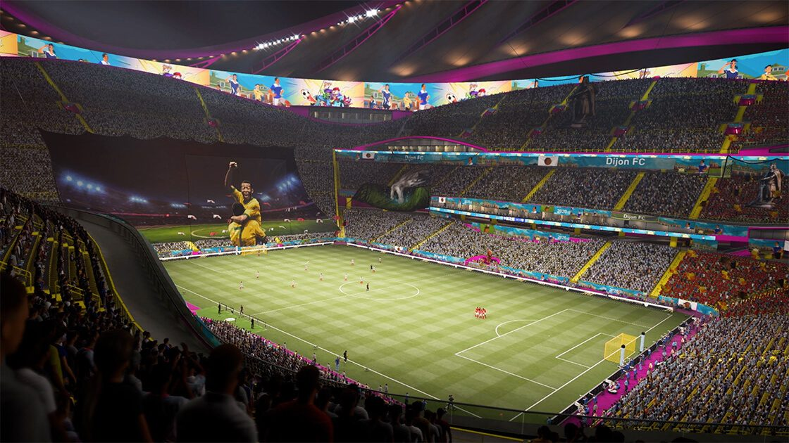
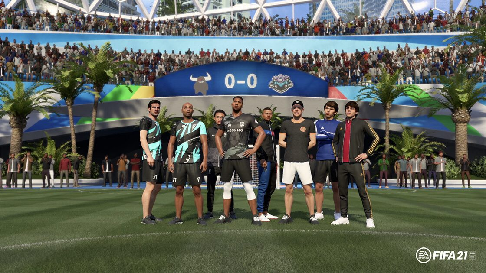
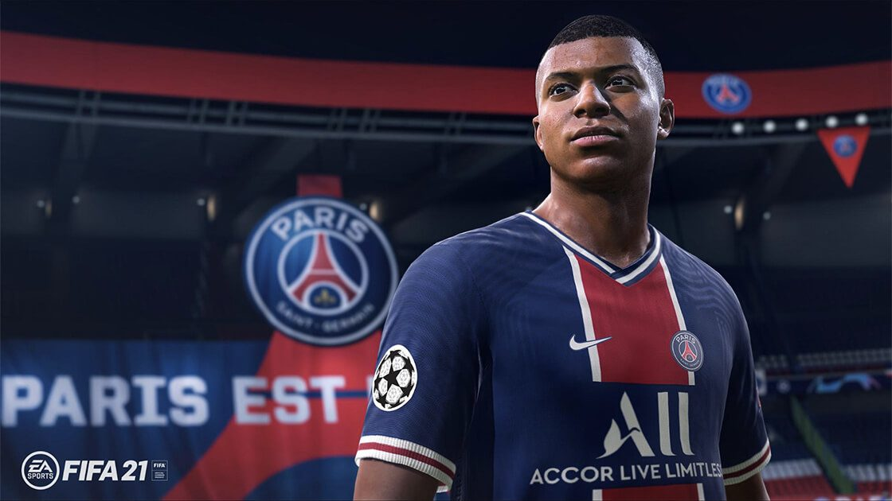
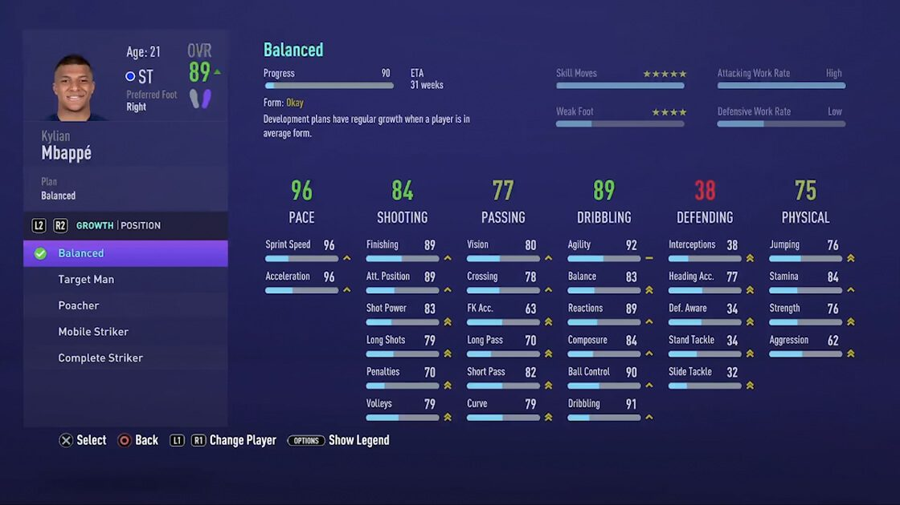

La temporada de fútbol ha comenzado y ya puedes jugar a FIFA 21 para PlayStation®4, Xbox One y PC. Da igual si eres un fan del Modo Carrera o un coleccionista de tifos de FUT, un apasionado de las Reglas Alternativas o un hipster del fútbol callejero, te damos 21 razones por las que no querrás perderte la oportunidad de conseguir tu copia y formar parte del Juego del mundo.
1. Más formas de jugar que nunca
FIFA 21 cuenta con nuevas funciones que te permitirán experimentar el juego del mundo de formas completamente nuevas. Únete a tus amigos y enfréntate a todo el mundo en FUT y VOLTA FOOTBALL . Planta cara a los más grandes del fútbol y a muchos más con los Rompemoldes de VOLTA. O pon a prueba tus habilidades con un sinfín de nuevos juegos de habilidad. ¡Hay un montón de cosas interesantes!
2. Puedes crear la plantilla de tus sueños e incluso el estadio de tus sueños
¿Alguna vez has querido juntar a Mbappé y Maradona? ¿O a Haaland y Henry? Con FIFA Ultimate Team podrás elegir entre miles de jugadores y crear el equipo de superestrellas de tus sueños, tanto pasadas como actuales. Además, ahora en FUT 21 puedes personalizar y convertir tu estadio en una auténtica caldera con nuevos tifos, cánticos asombrosos, imponentes trofeos y mucho más en tu Estadio de FUT.
3. Forma un equipo con la comunidad de FUT
Compite o colabora con la comunidad en nuevos eventos de FUT donde formarás parte de un equipo y podrás desbloquear recompensas. Además, encuentra un compañero y enfréntate a la IA en Squad Battles, o a otras parejas o jugadores individuales en Division Rivals online, con el nuevo modo cooperativo de FUT. Quizás no jueguen igual de bien que tú, pero recuerda que lo hacen lo mejor que pueden.
4. Disfruta de contenido en vivo durante la temporada
FUT presenta la conexión definitiva con el mundo real del fútbol gracias al contenido especial basado en lo que pasa en los campos. Lo que ocurre en el mundo real tiene un gran impacto en el juego: desde objetos especiales de la UEFA Champions League hasta mejoras importantes en el Equipo de la semana si los jugadores nos ofrecen momentazos durante el fin de semana.
5. Juega como el rey
De rey a ICONO. Eric Cantona se une a los FUT 100 , cien de los mejores futbolistas de todos los tiempos. Pero no estará solo. Dale la bienvenida a Xavi, Lahm, Eto'o, Torres y a muchos más, que se suman a Zidane, Pelé, Maradona, Ronaldinho y Cruyff en la lista de leyendas que puedes añadir a tu plantilla de FUT.

6. Dirige tu club de FUT estés donde estés
Contrata jugadores estrella, personaliza tu estadio, comparte tu plantilla y mucho más. Controla tu club donde y cuando quieras descargando la De rey a ICONO. Eric Cantona se une a los aplicacion complementaria de FUT para iOS y Android, o también en tu dispositivo de escritorio con la De rey a ICONO. Eric Cantona se une a los aplicacion web de FUT.
7. Puedes volver a las calles y esta vez hacerlo online con amigos
VOLTA FOOTBALL vuelve con su segunda temporada, ofreciéndote auténtico fútbol callejero en canchas y pistas de todo el mundo y con nuevos modos de juego. Los nuevos EQUIPOS DE VOLTA te permiten crear un equipo online con tus amigos y enfrentarte al mundo en partidos de 5 contra 5. ¡Hasta puedes jugar un Milan - Inter en las calles de Milán con los Partidos rápidos de VOLTA!

8. Desafía a las estrellas con los rompemoldes de VOLTA
Además de los EQUIPOS DE VOLTA y los Partidos rápidos de VOLTA, las BATALLAS DESTACADAS te permiten enfrentarte a algunas de las grandes personalidades de los diferentes mundos del fútbol, la música, la moda y mucho más, con la posibilidad de reclutarlos para tu equipo. No te pierdas las habilidades de Diplo con el balón, o dale un toque de realeza a tu equipo al enfrentarte en las calles con Eric Cantona. Los rompemoldes han llegado a FIFA 21.
9. Seis nuevas ubicaciones
Juega en seis nuevas ubicaciones en VOLTA FOOTBALL: una cúpula geodésica de Dubái, el paseo marítimo de Sídney, un tejado en el centro de São Paulo, las calles de Milán o París, y el ESTADIO VOLTA. ¡Todos suman 23 increíbles terrenos de fútbol en los seis continentes!

10. Más personalización
La personalización es clave en VOLTA FOOTBALL y FIFA 21 apuesta por un amplio abanico de ropa de adidas, de clubes de fútbol profesionales, de equipos de fútbol callejero y de colecciones diseñadas por famosos, que podrás desbloquear y vestir. O también puedes llevar algo un poco más extravagante…
11. Disfruta de un realismo inigualable
Con 17 000 jugadores y más de 700 equipos, 90 estadios con licencia y más de 30 ligas, FIFA 21 te ofrece un realismo inigualable con acceso exclusivo a algunas de las competiciones más importantes del mundo. Saborea lo que se siente al levantar la UEFA Champions League, la UEFA Europa League, la CONMEBOL Libertadores, la Premier League, la Bundesliga y muchas más, solo en FIFA 21.
12. La jugabilidad más inteligente en la historia de FIFA
Las nuevas características de juego de FIFA 21 te recompensan por tu creatividad y control. Toma el control del plan de juego de tu equipo con los Desmarques creativos, supera a los defensas con Regates ágiles y disfruta de las mejoras del juego en todo el campo.
<13. La gestión de tu equipo, aún más detallada
Tanto si estás a cargo del Real Madrid o del Real Salt Lake, el Independiente Medellín o el Inter de Milán, el Modo carrera de FIFA 21 te permite experimentar lo que se siente al gestionar el camino hacia la gloria de tu equipo con las funciones más detalladas hasta la fecha.
14. Nueva profundidad en los partidos
Un nuevo Simulador de partidos interactivo te permite jugar la temporada de una manera inédita. Intervén cuando quieras en los partidos para cambiar el resultado y controlar momentos importantes como penaltis o faltas, y haz cambios directamente desde el simulador mientras analizas los niveles de rendimiento de tus jugadores y las estadísticas del encuentro.
15. El entrenamiento
Prueba a colocar a Alexander-Arnold como mediocentro o mueve a Jõao Félix a la banda con las nuevas conversiones de posición, que te permitirán subsanar las carencias de tu equipo y configurar planes de desarrollo para que tus jugadores progresen y se adapten a tu estilo de juego. Además, ten más control del entrenamiento con un nuevo planificador que te permite elegir cuándo se entrena y cuándo se descansa para equilibrar la soltura y la frescura, y asegurarte de que estás rindiendo al cien por cien.
16. Traspasos
Tanto si quieres fichar a Mbappé como al próximo Mbappé, realismo mejorado de los traspasos te proporciona formas inéditas de fichar jugadores gracias a las nuevas cesiones con opción de compra, que te permitirán probar a los jugadores antes de comprometerte a añadirlos a tu plantilla de forma permanente. Y, si lo prefieres, incluso puedes aumentar el presupuesto con un espaldarazo financiero de hasta 500 millones extra que te ayudarán a fichar a alguna que otra superestrella.
17. Celebra tus mejores momentos con más clase
Los goles se tienen que celebrar. FIFA 21 te permite saltar, bailar, hacerte un selfie y posar con estilo con las nuevas celebraciones, como la postura del loto de Erling Haaland, el bebé llorón de Kylian Mbappé, ¡y muchas más! Échales un vistazo a todas aqui.
18. Habilidad, con más fanfarronería
Arrastre de balón con amago de giro. Autopase. Túnel dirigido. Pisada al tacón. Finta hacia delante y giro. Cinco nuevas filigranas para que las domines y las emplees en tu juego mientras te abres camino entre los rivales en FIFA 21.
19. Obtén contenido adicional durante toda la temporada con EA Play
20. La doble versión te permite conservar tus progresos en FIFA Ultimate Team y VOLTA FOOTBALL cuando te compres una consola de nueva generación.
Compra FIFA 21 para PlayStation®4 o Xbox One antes del lanzamiento de FIFA 22 y consigue la versión de tu juego para la consola equivalente de nueva generación (PlayStation®5 o Xbox Series X|S) gratis†. ¡Podrás seguir jugando a VOLTA FOOTBALL y FIFA Ultimate Team tal y como los dejaste!
encontrarás más información sobre la doble versión aqui.
21. Y... ¿quién sabe? Puede que te topes con alguno de estos...
Las estrellas también juegan. ¡ Únete ya a ellos !